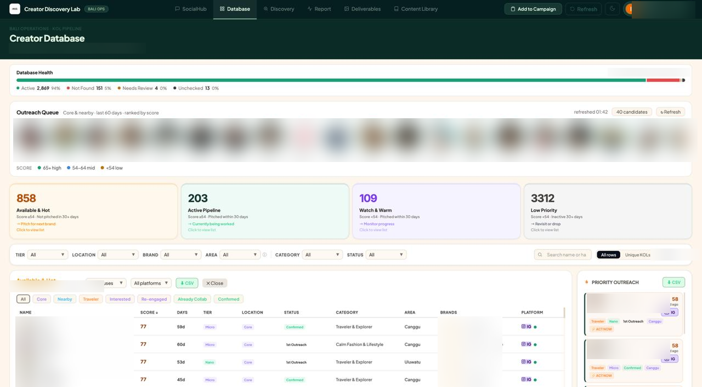
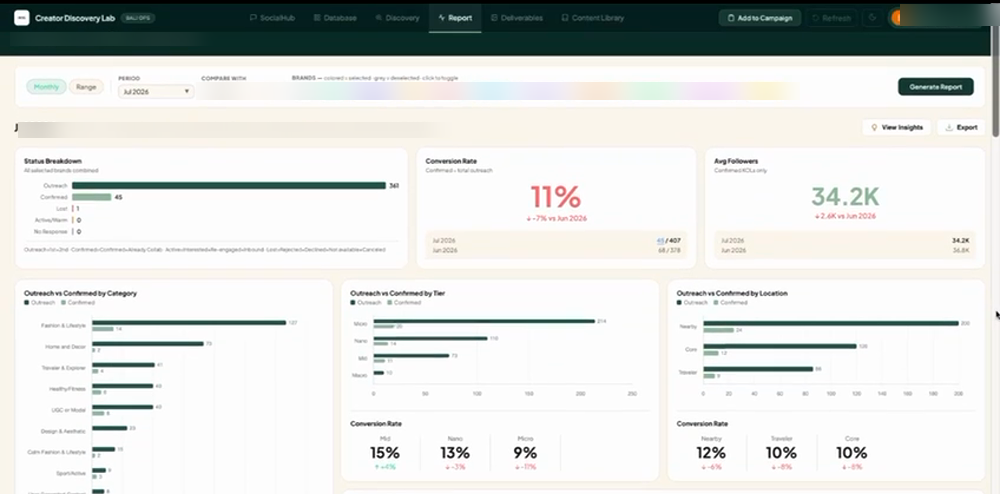

I run KOL and community operations at a creator marketing agency in Bali. Rather than doing the repetitive parts by hand, I designed and built the system that does them: a discovery pipeline, a scored decision database, a reporting layer that recommends rather than reports, and a Chrome extension that puts the workflow onto Instagram itself. Six modules in production. No engineering team.
Six years in community, partnerships and project management: GoTo, Moka, a national campaign platform, now creator marketing. The thread isn't a job title. It's that I keep finding the part of the work that shouldn't be done by a human, and removing it.
Creator Discovery Lab is the case for depth: I found the problem by doing the job, framed it, designed the product, built it and now operate it, alone, using AI-assisted development, no engineers involved. Ekta is the case for scale: product manager on a field canvassing platform that logged over half a million activities in six months, with a real engineering team and an immovable deadline.
A decision system for creator marketing operations. HeyRCG, Bali.
I wasn't handed a brief. I was hired to do creator outreach, and the job itself was the research. Finding creators in Bali meant browsing Instagram hashtags, tagged posts and follower lists by hand: hours of scrolling, no record of who I'd already seen, the same profiles resurfacing week after week. Relationships lived in a spreadsheet with twelve outreach statuses and no signal about who was actually worth chasing. Creator deliverables landed in Drive with no link back to the creator, brand or campaign, so "what did this creator make for us" meant asking whoever remembered.
Every one of those is a symptom. The mistake would have been to build a fix for each.
The brief everyone assumes, versus the one worth building for.
"We don't have a creator database."
"We can't tell who's worth contacting today."
Those two problems produce completely different products. The first gives you a searchable list, which is what most creator tools are, and which still leaves a human reading rows and guessing. The second gives you a system that ranks, filters and recommends, so the human is choosing between three options instead of three thousand.
Everything downstream came from committing to the second framing.
These are the parts I'd actually want to defend in an interview.
This is the product's one rule, and I applied it everywhere as a test: if a screen shows you a number without implying an action, it's not finished. A creator list becomes four priority quadrants. A brand's progress becomes a gap, not a count. A performance chart becomes a recommendation.
The knowledge that made outreach work (which creators are worth the effort, how long to wait before re-contacting, when a cold profile becomes fair game again) lived in my head and nowhere else. That's a single point of failure and it doesn't scale past one person.
So I wrote it down as thresholds the system enforces: a composite score built from engagement rate, follower tier, location and recency; a 30-day cooldown before re-pitching; a 75-day window before a passed-over profile can resurface. Explicit rules can be argued with and tuned. Tribal knowledge can't.
Client brand content lives in client-owned Drives, organised however each client feels like organising it, and they reorganise without telling anyone. The tempting build is to copy everything somewhere clean. That creates a sync problem, a storage cost, and a permissions headache.
Instead I index in place and derive nothing from folder names: brand comes from a registry, dates from file metadata, media type from MIME type. Folder paths are stored as searchable labels only. A client can restructure their entire Drive and the system doesn't notice. A canonical category layer maps each client's own vocabulary onto shared categories, so different naming conventions become one consistent browse experience.
A prioritisation system that never checks its own predictions is just an opinion with a database attached. So the reporting layer tracks outcomes back against the inputs: conversion by follower tier, by content category, by location, by outreach week.
That loop produced findings I would not have guessed and that changed how the team works: that mid-tier creators convert meaningfully better than the micro tier everyone defaults to, and that day-of-week has a real effect on reply rate. The system now recommends both. This is the part I'm proudest of: it stopped being a place to record work and started being a thing that tells you how to work.
Two of the three worst incidents were invisible. An early bug wrote data against the wrong creator because a record was identified by spreadsheet row number, and inserting a row shifted everything. Nothing errored, the data was just quietly wrong. Later, the dashboard degraded to multi-minute load times because two independent caching layers were failing into empty exception handlers, so both had been broken for an unknown length of time with no signal at all.
The fix was structural, not tactical: stable IDs everywhere, never positions; failures surface loudly; and a health panel on the database itself that continuously reports how many creator records are active, unreachable or awaiting review, so degradation is visible before someone trips over it.
Six modules, shipped incrementally over eight months.
An automated pipeline crawling hashtags, tagged posts and the follower graphs of confirmed creators, filtering to a target follower band and writing qualified candidates into a review queue.
The decision surface. A composite score sorts every creator into four action quadrants, filterable by tier, location, brand, area, category and status, with a live priority queue flagging who to contact now.
Conversion analysis by tier, category and location; outreach velocity; single- versus multi-brand retention; per-brand target tracking with the remaining gap stated explicitly.
An indexer that catalogues deliverables automatically, attributes each to a creator, brand and event, and presents them as a browsable visual library with organic-versus-paid usage tracking.
An index-in-place catalogue that never copies or moves a file, derives nothing from folder names, and maps each client's own vocabulary onto shared categories.
A browser extension putting the workflow where the work actually happens: batch metric capture straight to the master sheet, saved DM templates, an AI message improver, and an overlay flagging profiles already in the database.


The point of the automation isn't that jobs run on a schedule. It's that the work no longer depends on someone remembering to do it. The pipeline keeps filling, the data keeps correcting itself, and the library keeps growing whether anyone is paying attention or not.
The discovery crawl runs on its own through the working week, so the candidate queue is already full when someone sits down to review it. Nobody schedules a "go find creators" task.
Profile links are re-validated continuously and dead ones flagged, so the database degrades visibly instead of silently. Creator images are backfilled so records stay usable long after a profile changes.
New creator deliverables are found, attributed and indexed throughout the working day, and deleted ones disappear. No one maintains a folder structure.
Because analysis reads live operational records, there is no reporting cycle, no export step and no reconciliation between what the team works in and what leadership sees.
These numbers measure the software, not the business. I've kept them exact because the diagnosis is the interesting part: the bug was invisible by construction, and I found it by measuring the running application rather than reading the code.
| Metric | Before | After |
|---|---|---|
| Core data load | 68 s | 0.35 s |
| Image requests at page load | 185 | 0 |
| Failed avatar requests per load | 99 | 0 |
| Payload size | 2.74 MB | 1.63 MB |
| Browser cache writes | never succeeded | succeeds |
194× faster on the request blocking first paint. Payload cut 40% by removing data duplicated inside the same response. A shared server-side cache with 6.4× compression means every user benefits from one fetch rather than each paying full cost.
The discipline worth noting: I suspected an infrastructure bottleneck, investigated it, measured it at 0.4% of total latency, and deliberately did not touch it. The real cause was two caches failing in silence, and I would have missed it if I'd trusted the hypothesis instead of the measurement.
Field canvassing app and monitoring dashboard for a national legislative campaign. Satu Teknologi Digital, Jakarta.
Field canvassing at national scale is a coordination problem wearing a data problem's clothes. Hundreds of volunteers working across regions, recording door-to-door contact on paper or in ad-hoc chats, with no reliable way for campaign leadership to see coverage, duplication or progress until long after the window to act on it had closed.
I ran product for the canvassing app and its monitoring dashboard, translating what field teams actually did into something an engineering team could build, then holding scope against a deadline that could not move. I led the upstream research as well: user profiling, market analysis and positioning work that redefined the project's direction before a line of the app was written.
Alongside it I ran daily content operations for an active user base of 50,000+, and held the relationships with government bodies, partners and clients that kept the programme supported.
The detail I can publish about this one is limited by the context it was built in. I am happy to walk through the product decisions, the things that did not work, and the adoption problem in conversation.
Four rules, each one bought with a specific mistake.
Every good decision in Creator Discovery Lab came from having personally done the tedious version first. You cannot correctly frame a workflow problem you have only heard described.
Both major outages traced to errors swallowed by empty exception handlers. A system that fails loudly gets fixed in an hour; one that fails quietly gets fixed in a month, after it has already corrupted something.
Folder structures, categories, brand onboarding are all data. A new client requires no deployment. This is the line between a tool that serves three clients and one that serves thirty.
I've been confidently wrong about a bottleneck and caught it only by measuring. Now the hypothesis never gets actioned before the number does.
Six years across community, partnerships and product, consistently at the point where operations meets tooling.